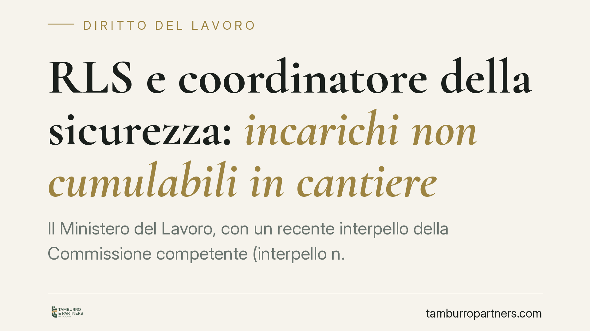

RLS e coordinatore della sicurezza: incarichi non cumulabili in cantiere
Il Ministero del Lavoro, con un recente interpello della Commissione competente (interpello n. 4/2026), torna sul tema dell'incompatibilità tra il ruolo di rappresentante dei lavoratori per la sicurezza e quello di coordinatore per la progettazione. Il chiarimento incide sulle scelte organizzative delle imprese edili e impone una verifica delle nomine già in essere.

Il fatto
Il Ministero del Lavoro, tramite la Commissione per gli interpelli, è stato chiamato a pronunciarsi sulla possibilità che il rappresentante dei lavoratori per la sicurezza (RLS) di un'impresa assuma anche l'incarico di coordinatore per la progettazione (CSP) nello stesso cantiere in cui quell'impresa opera con propri lavoratori.
La risposta, contenuta nell'interpello n. 4/2026, è negativa. Resta inteso che gli interpelli non introducono norme nuove: forniscono l'interpretazione ufficiale delle disposizioni vigenti, con valore orientativo per operatori e organi di vigilanza. Prima di ogni decisione organizzativa è comunque opportuno consultare il testo integrale presso la fonte ministeriale.
Inquadramento normativo
Le due figure rispondono a logiche diverse. Il RLS è disciplinato dagli artt. 47 e 50 del D.Lgs. 81/2008: è eletto o designato dai lavoratori e ne rappresenta gli interessi in materia di salute e sicurezza. La sua funzione è, per definizione, di parte: tutela i lavoratori della propria impresa nel confronto con il datore di lavoro.
Il coordinatore per la progettazione opera invece nell'ambito dei cantieri temporanei o mobili (Titolo IV). L'art. 89 ne fornisce le definizioni; l'art. 90 pone in capo al committente o al responsabile dei lavori l'obbligo di nominarlo; l'art. 91 ne individua i compiti, tra cui la redazione del piano di sicurezza e coordinamento (PSC), il cui contenuto è dettagliato dall'art. 100. Il CSP coordina la sicurezza nell'interesse di tutte le imprese che interverranno nel cantiere, su incarico del committente.
Perché i due ruoli non convivono
La ragione dell'incompatibilità non sta in una generica "imparzialità" del coordinatore, che non è un soggetto terzo: è nominato dal committente e opera nel suo perimetro. Il problema è il conflitto strutturale tra le due funzioni.
Da un lato il RLS porta gli interessi dei lavoratori della sua impresa. Dall'altro il coordinatore deve pianificare e armonizzare la sicurezza di una pluralità di imprese presenti nel cantiere, bilanciando esigenze potenzialmente divergenti. Quando l'impresa del RLS è una delle esecutrici, lo stesso soggetto si troverebbe a coordinare, fra le altre, anche l'impresa di cui rappresenta i lavoratori. Le due posizioni non sono conciliabili senza compromettere l'effettività di entrambe.
Implicazioni pratiche
Per le imprese edili la conseguenza è concreta. Le nomine che accorpano RLS e CSP in cantieri dove l'impresa interviene con propri lavoratori sono esposte a contestazione.
In sede ispettiva, l'organo di vigilanza può rilevare l'irregolarità della nomina del coordinatore. La ricaduta più delicata, però, emerge sul piano della responsabilità: in caso di infortunio, una nomina viziata da conflitto può indebolire la tenuta dell'intero impianto di sicurezza del cantiere e aggravare la posizione del committente e dei soggetti coinvolti.
È opportuno affrontare la revisione delle nomine prima dell'avvio dei lavori, quando la correzione ha un costo organizzativo ridotto, e non in sede di controllo o di contenzioso.
Cosa fare in concreto
- Mappate le nomine in essere: individuate i cantieri in cui la stessa persona ricopre ruolo di RLS e di CSP.
- Verificate se l'impresa del RLS opera nel cantiere con propri lavoratori: è questa la condizione che fa scattare l'incompatibilità.
- Separate gli incarichi, affidando il coordinamento a un professionista diverso in possesso dei requisiti dell'art. 98 D.Lgs. 81/2008.
- Aggiornate la documentazione di cantiere e il PSC per riflettere la nuova ripartizione dei ruoli.
- Istruite committenti e responsabili dei lavori sulla verifica da compiere prima di ogni nomina del coordinatore.
Un chiarimento, non una riforma
L'interpello non modifica il quadro normativo: ricostruisce la corretta lettura degli artt. 47, 50 e 89-91 del D.Lgs. 81/2008 in un caso ricorrente nella prassi dei cantieri. Proprio per questo il suo rilievo è operativo: segnala un orientamento che gli organi di vigilanza tenderanno a seguire.
Disclaimer
Contributo informativo a cura di Tamburro & Partners - Avv. Giuseppe Tamburro. Non costituisce parere legale.
Ogni storia di lavoro ha i suoi tempi.
Se gestisci HR e vuoi un confronto su contenzioso, ispezioni o licenziamenti, scrivi allo studio. Ti rispondiamo entro un giorno lavorativo.